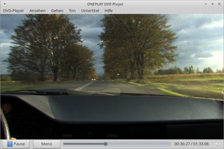

ONEPLAY DVD Player
Dieser Artikel wurde für die folgenden Ubuntu-Versionen getestet:
Ubuntu 16.04 Xenial Xerus
Ubuntu 14.04 Trusty Tahr
Zum Verständnis dieses Artikels sind folgende Seiten hilfreich:
Aufgrund rechtlicher Unsicherheiten werden unter Ubuntu standardmäßig keine Programme installiert, welche kopiergeschützte und mit CSS verschlüsselte DVDs abspielen können. Mithilfe des kostenpflichtigen ONEPLAY DVD Players (ehemals Fluendo DVD Player) der spanischen Firma Fluendo S.A. 
 können diese DVDs problemlos und (in Deutschland) legal abgespielt werden. Dabei wird das Multimedia-Framework GStreamer genutzt.
können diese DVDs problemlos und (in Deutschland) legal abgespielt werden. Dabei wird das Multimedia-Framework GStreamer genutzt.
Beim Kauf der Anwendung werden automatisch die für die Wiedergabe notwendigen Patente (u.a. MPEG und Dolby) lizenziert. Auf der Herstellerseite steht eine Demoversion zur Verfügung. Mit dieser kann das Programm 30 Tage kostenlos getestet werden. Neben dem DVD-Player bietet Fluendo außerdem lizenzrechtlich geschützte Codecs zum Kauf an.
Eine ebenfalls kostenpflichtige Alternative ist LinDVD.
|  |
| ONEPLAY DVD Player |
Der DVD Player bietet:
DVD-Wiedergabe
Unterstützung von DVD-Menüs
Vollbildmodus
Anzeige von Untertiteln
Fortsetzung der Wiedergabe ab der letzten Position
verschiedene Kamerawinkel
Dolby Digital 5.1 (Ausgabe und Stereo-Downmix)
Steuerung per Fernbedienung in der Beta-Version
Installation¶
Herstellerseite¶
Die Software kann man über verschiedene Bezugsquellen oder über das Software-Center erworben werden, der Preis variiert abhängig vom gewählten Support . Das benötigte Paket kann man nach dem Kauf von einer geschützten Seite herunterladen und installieren [1]. Es gibt Pakete für 32- und 64-bit-Architekturen (Binär- und .deb-Pakete).
Hinweis:
Neuere Versionen des Programms stehen für die unterschiedlichen Architekturen als .tar-Archiv zur Verfügung. Nachdem dieses entpackt [3] wurde ist die Reihenfolge bei der Installation [1] zu beachten. Vor dem installieren des Players muss zuerst das Software-Schutzsystem CodeMeter aufgespielt werden.
Nach erfolgreicher Installation ist das Programm bei Ubuntu-Varianten mit einem Anwendungsmenü unter "Multimedia -> Fluendo DVD Player" bzw. "Multimedia -> ONEPLAY DVD Player" zu finden.
Software-Center¶
Der DVD Player kann über das Software-Center käuflich erworben werden. Dazu ist eine Registrierung bzw. ein Zugang über Ubuntu One erforderlich, welchen man sich aber auch während des Zahlungsprozesses über das Software-Center anlegen kann. Anschließend wird die Anwendung automatisch heruntergeladen und installiert. Für zukünftige Updates wird eine neue Paketquelle hinzugefügt.
Demo¶
Die Demoversion kann von fluendo.com heruntergeladen und wie die Vollversion installiert werden.
Bedienung¶
Die wichtigen Funktionen sind übersichtlich und direkt über Schaltflächen zu erreichen:
Konfiguration¶
Über "DVD Player -> Präferenzen" erreicht man die Einstellungen. Wichtig ist, dass unter "Region", bei eingelegter DVD, der Regionalcode eingestellt wird. Das Programm verweigert ansonsten den Dienst.
| Einstellungen | |
| Reiter | Beschreibung |
| "Einstellungen" | Wiedergabeoptionen im Vollbildmodus ändern und Lesezeichenfunktion definieren. |
| "Region" | DVD-Laufwerk, Regionalcode ändern und DVD-Informationen |
| "Sprache" | Sprach- und Untertitelvoreinstellungen anpassen |
| "Audio" | Soundeinstellungen verändern |
| "Video" | Videoeinstellungen und Deinterlacing |
Lirc¶
Um das Programm mit einer Fernbedienung nutzen zu können muss die Datei ~/.lircrc im Homeverzeichnis mit einem Editor [2] bearbeitet werden. Hier die in dieser Datei  ersichtlichen Ergänzungen eintragen und an die eigene Fernbedienung anpassen.
ersichtlichen Ergänzungen eintragen und an die eigene Fernbedienung anpassen.
Wechseldatenträger¶
Xfce¶
Sofern der DVD Player beim Einlegen einer DVD automatisch gestartet werden soll, muss man in Xfce als Befehl fluendo-dvd bzw. oneplay-dvd hinterlegen.
Unity/GNOME 3¶
Nutzer von Ubuntu tragen das Verhalten in den GNOME3 Systemeinstellungen unter "Informationen → Wechselmedien" ein. Hier aus dem Dropdown-Menü den Punkt "DVD-Video" anwählen und als Option bei "Anderer Anwendung..." den Befehl fluendo-dvd bzw. oneplay-dvd angeben.
Tastenkürzel¶
| Tastenkürzel | |
| Taste(n) | Beschreibung |
| F | Vollbildmodus (de)aktivieren |
| M | Menüleiste ein/ausblenden |
| C | Kontrollleiste ein/ausblenden |
| T | Zeit ein/ausblenden |
| Strg + Q | Programm beenden |
Infobox¶
| ONEPLAY DVD Player | |
| Ursprungsname: | Fluendo DVD Player |
| Sprache: | |
| Veröffentlichung: | 2009+ |
| Hersteller: | Fluendo S.A. |
| Systemvoraussetzungen: | - |
| Medien: | Download |
| Läuft mit: | nativ |
Links¶
Produktbeschreibung
und BezugsquelleFluendo DVD-Player + Support- und Updateverlängerung bei ixsoft.de
- alternative BezugsquelleIm Test: Fluendo DVD Player
- freiesMagazin, 10/2010DVD-Player für Linux - Ikhaya 07/2009
Codecs - lizenzrechtlich geschützte Codecs installieren
- Erstellt mit Inyoka
-
 2004 – 2017 ubuntuusers.de • Einige Rechte vorbehalten
2004 – 2017 ubuntuusers.de • Einige Rechte vorbehalten
Lizenz • Kontakt • Datenschutz • Impressum • Serverstatus -
Serverhousing gespendet von